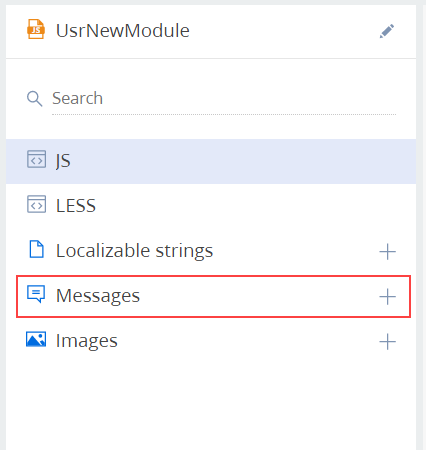
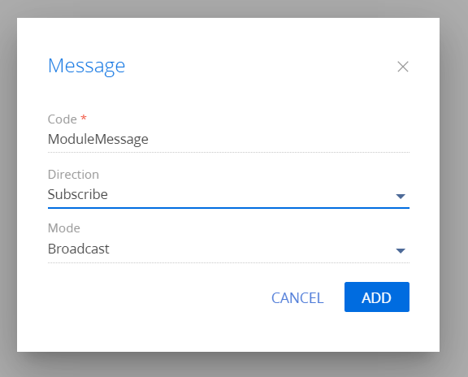

Модуль в Creatio является изолированной программной единицей. Ему ничего не известно об остальных модулях системы, кроме имен модулей, от которых он зависит. Для организации взаимодействия модулей предназначен специальный объект — sandbox.
Sandbox предоставляет два ключевых механизма взаимодействия модулей в системе:
- Механизм обмена сообщениями между модулями.
- Загрузка и выгрузка модулей по требованию (для визуальных модулей).
Обмен сообщениями между модулями
Модули могут общаться друг с другом только посредством сообщений. Модуль, которому требуется сообщить об изменении своего состояния другим модулям в системе, публикует сообщение. Если модулю необходимо получать сообщения об изменении состояний других модулей, он должен быть подписанным на эти сообщения.
Зарегистрировать сообщение
Чтобы модули могли обмениваться сообщениями, сообщения необходимо зарегистрировать.
Для регистрации сообщений модуля предназначен метод sandbox.registerMessages(messageConfig), где messageConfig — конфигурационный объект сообщений модуля.
Конфигурационный объект является коллекцией "ключ-значение", в которой каждый элемент имеет вид, представленный ниже.
Здесь MessageName — ключ элемента коллекции, содержащий имя сообщения. Значением является конфигурационный объект, содержащий два свойства:
- mode — режим работы сообщения. Должно содержать значение перечисления Terrasoft.MessageMode (Terrasoft.core.enums.MessageMode).
- direction — направление сообщения. Должно содержать значение перечисления Terrasoft.MessageDirectionType (Terrasoft.core.enums.MessageDirectionType).
Режимы обмена сообщениями (свойство mode):
- Широковещательный — режим работы сообщения, при котором количество подписчиков заранее неизвестно. Соответствует значению перечисления Terrasoft.MessageMode.BROADCAST.
- Адресный — режим работы сообщения, при котором сообщение может быть обработано только одним подписчиком. Соответствует значению перечисления Terrasoft.MessageMode.PTP.
Направления сообщения (свойство direction):
- Публикация — модуль может только опубликовать сообщение в sandbox. Соответствует значению перечисления Terrasoft.MessageDirectionType.PUBLISH.
- Подписка — модуль может только подписаться на сообщение, опубликованное из другого модуля. Соответствует значению перечисления Terrasoft.MessageDirectionType.SUBSCRIBE.
- Двунаправленное — позволяет публиковать и подписываться на одно и то же сообщение в разных экземплярах одного и того же класса или в рамках одной и той же иерархии наследования схем. Соответствует значению перечисления Terrasoft.MessageDirectionType.BIDIRECTIONAL.
В схемах модели представления регистрировать сообщения с помощью метода sandbox.registerMessages() не нужно. Достаточно объявить конфигурационный объект сообщений в свойстве messages.
Для отказа от регистрации сообщений в модуле можно воспользоваться методом sandbox.unRegisterMessages(messages), где messages — имя или массив имен сообщений.
Добавить сообщение в схему модуля
Зарегистрировать сообщения можно также, добавив их в схему модуля с помощью дизайнера.
Для добавления сообщения в схему модуля:
-
В области свойств модуля дизайнера схемы модуля добавьте сообщение в узел Сообщения(Messages).
 -
Для добавленного сообщения установите необходимые свойства:
- Название (Name) — имя сообщения, совпадающее с ключом в конфигурационном объекте модуля.
- Направление (Direction) — направление сообщения. Возможные значения "Подписка" ("Follow") и "Публикация" ("Publish").
- Режим (Mode) — режим работы сообщения. Возможные значения "Широковещательное" ("Broadcast") и "Адрес" ("Address").

Опубликовать сообщение
Для публикации сообщения предназначен метод sandbox.publish(messageName , messageArgs, tags).
Для сообщения, опубликованного с массивом тегов, будут вызваны только те обработчики, для которых совпадает хотя бы один тег. Сообщения, опубликованные без тегов, смогут обработать только подписчики без тегов.
Подписаться на сообщение
Подписаться на сообщение можно, используя метод sandbox.subscribe(messageName, messageHandler, scope, tags).
Загрузка и выгрузка модулей
При работе с пользовательским интерфейсом Creatio может возникнуть необходимость загрузки не объявленных как зависимости модулей во время выполнения приложения.
Загрузить модуль
Для загрузки не объявленных в качестве зависимостей модулей предназначен метод sandbox.loadModule(moduleName, config). Параметры метода:
- moduleName — название модуля.
- config — конфигурационный объект, содержащий параметры модуля. Обязательный параметр для визуальных модулей.
Выгрузить модуль
Для выгрузки модуля необходимо использовать метод sandbox.unloadModule(id, renderTo, keepAlive). Параметры метода:
- id — идентификатор модуля.
- renderTo — название контейнера, из которого необходимо удалить представление визуального модуля. Обязателен для визуальных модулей.
- keepAlive — признак сохранения модели модуля. При выгрузке модуля ядро может сохранить его модель для возможности использовать ее свойства, методы, сообщения. Не рекомендуется к использованию.
Создать цепочку модулей
Иногда возникает необходимость показать представление некой модели на месте представления другой модели. Например, для установки значения определенного поля на текущей странице нужно отобразить страницу выбора значения из справочника SelectData. В таких случаях нужно, чтобы модуль текущей страницы не выгружался, а на месте его контейнера отображалось представление модуля страницы выбора из справочника. Для этого можно использовать цепочки модулей.
Чтобы начать построение цепочки, достаточно добавить свойство keepAlive в конфигурационный объект загружаемого модуля.